彈琴之前要做一些熱身練習
就像運動之前的拉筋一樣
可以讓你的手指更靈活
也比較不會受傷喔
暖身操
繞肩
雙手放鬆自然垂下
肩膀聳起向後繞圈個幾次，再向前繞個幾次
放鬆你的肩胛骨肌肉
轉手臂
慢慢向後轉整支左手臂，畫幾個大圈，再向前轉
換右手臂慢慢向後轉，再向前轉
好像游自由式的感覺
擴胸
雙手向後伸後，掌心對掌心十指交扣
慢慢向後拉，停個幾秒
再向上拉，停個幾秒
再向下拉，停個幾秒
轉手腕
兩隻手可以一起轉
慢慢往順/逆時針轉幾圈
然後再換逆/順時針轉幾圈
壓四根手指
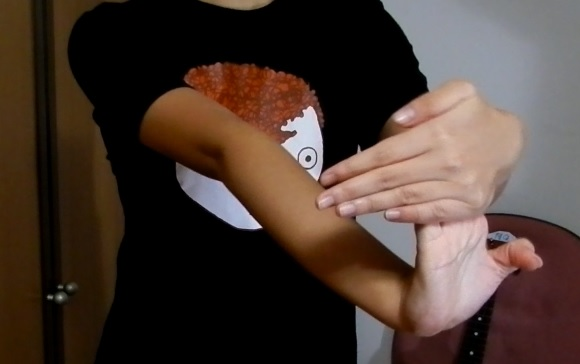
把右手掌心橫向面對自己
左手食指/中指/無名指/小指背對自己併攏，並貼在左掌心
右手往自己這邊壓一壓
再換左手壓右手
壓一根手指
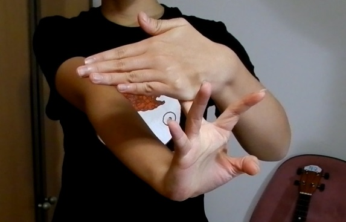
跟上一個動作很像
但一次只壓一根手指
大拇指也要喔
分開手指
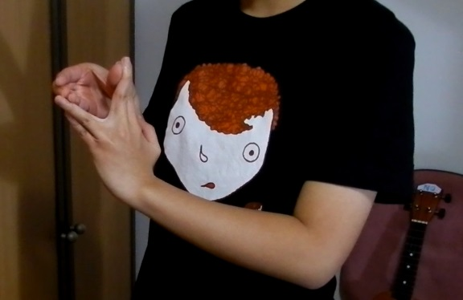
用右手把左手每個指頭和指頭間推開
然後換左手推開右手指
最後呢，你的手指可以自己分開
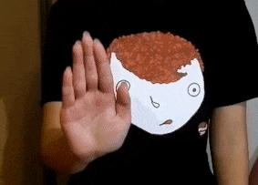
爬格子
爬格子可以讓你的左手變靈活，也可以更熟悉這個樂器
或是看電視的時候，不要吃零食，來爬格子
這樣比較不會變胖喔
左手不要用虎口扣住琴頸，把大拇指放在琴頸中間的的位置
因為這樣手比較可以伸展的開來
右手可以用大拇指、食指，或每一條弦用不同手指都可以
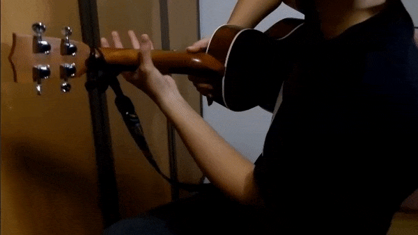
原地運動
先固定在同一條弦上原地按
食指負責第一格
中指負責第二格
無名指負責第三格
小指負責第四格
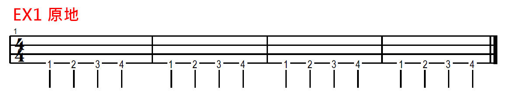
- 按的位置要在金屬條 (琴衍) 旁邊，這樣會比較省力
- 爬完四個音，手指頭才可以"翹"起來
- 速度和力量要穩定一致，可用節拍器協助練習
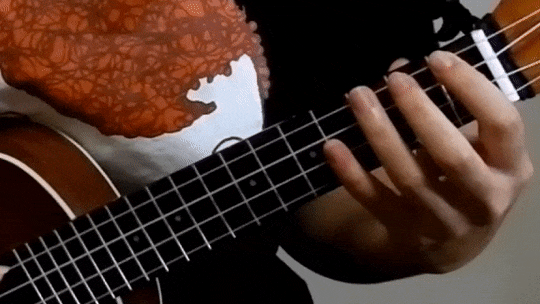
縱向運動
固定在前四格，但不同條弦
一次只能動一根手指頭
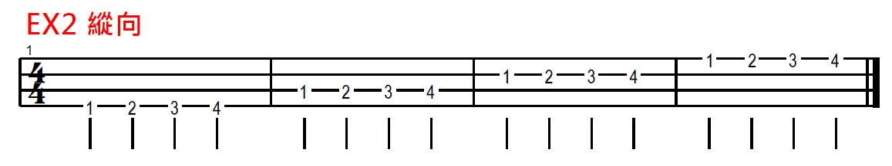
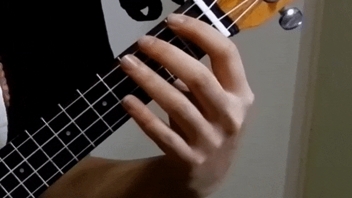
橫向運動
固定在同一條弦，但格數變多
所以手需要橫向移動
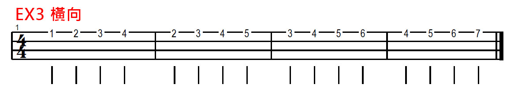
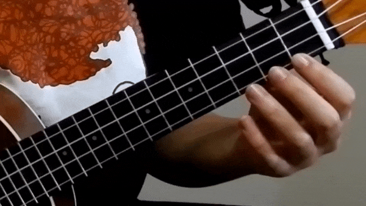
24 種指法
除了上面的練習，其實還有很多種跑法
像斜的、跨弦、跨格子
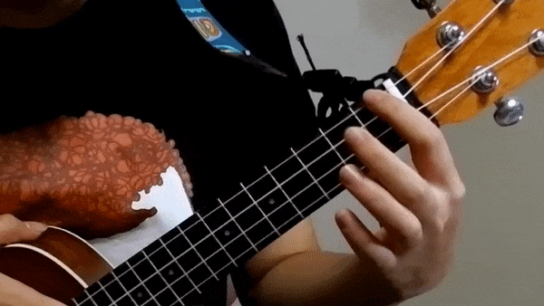
不同跑法，再搭配下面 24 種指法
真是練都練不完呢
(1 = 食指、2 = 中指、3 = 無名指、4 = 小指)
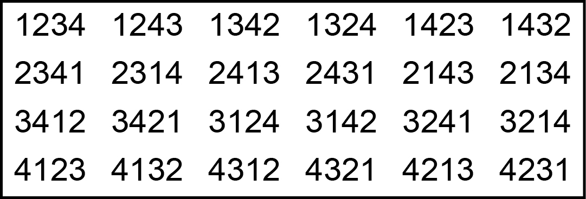
右手
如果你左手累了想休息，你也可以練右手
像從第四弦彈到第一弦再彈回來
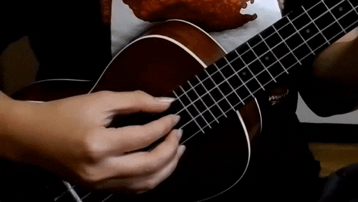
或是很有名的 T1213121
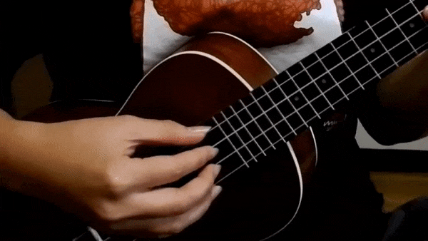
- 每天都練幾分鐘，而不是一天練很久
- 一開始速度慢慢來，可以對節拍器
- 動作要小，減少多餘的動作
- 音要彈的清楚、彈得連續